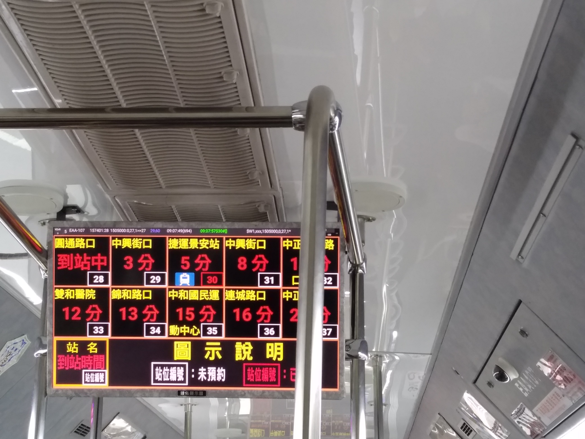
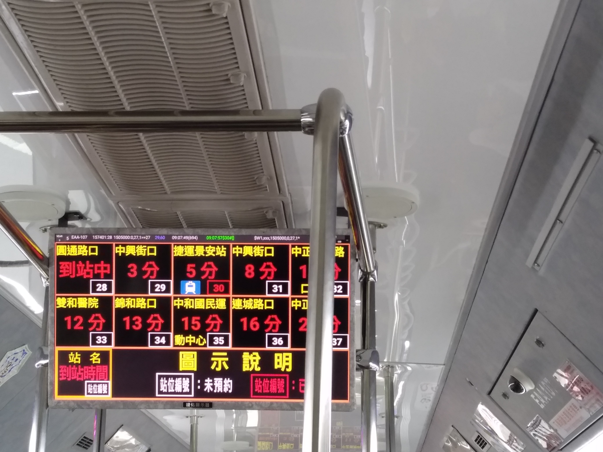

Posted by Hsien-Hui Tang 唐玄輝 · Sep 27, 2019 at 8:04 AM 電的問題 https://news.ltn.com.tw/news/life/breakingnews/2925512 Comments & Events Stanley, 計畫共同主持人 今天也看到一個https://mypositiveoutlooks.com/blind-engineer-builds-a-smart-cane-that-has-google-maps/ Sep 27, 2019 at 3:43 PM Notified 17 people A-Bao, 計畫伴隨者 https://buzzorange.com/2019/10/04/the-elderly-friendly-design/ 9 月 26 日啟動的全台首座結 Oct 04, 2019 at 11:33 PM Notified 17 people A-Bao, 計畫伴隨者 https://m.ltn.com.tw/news/politics/breakingnews/2764700 Oct 06, 2019 at 10:20 AM Notified 17 people A-Bao, 計畫伴隨者 今天體驗新北公車下車預約，真的頗直觀操作方便。  下載打開App立刻跳出所搭公車號碼，可訂車頁面。訂了景安捷運站下車，下方框會變紅，顯示預約，快到站一廣播App同時通知我。訊息圖片供參。 • Download Oct 08, 2019 at 1:23 AM Notified 17 people Hsien-Hui Tang 唐玄輝, 總監 功能運作上是好的，但是是視覺上真的好醜。其實可以不要用紅色，用藍色等比較冷靜的顏色。然後預約的站，可以用不同的顏色顯示，目前好像是一個小小的藍色方格顯示。不知道是否可以查到，這個設備的價格。昨天我在北市府的會議中有說bus+，目前北市府案子的狀況不好。 Oct 08, 2019 at 1:46 AM Notified 17 people A-Bao, 計畫伴隨者 視覺上真的好醜+1😂 Oct 08, 2019 at 1:48 AM Notified 17 people A-Bao, 計畫伴隨者 預約的站，可以用不同的顏色顯示-我預約景安，所以右下小框變紅。小小的藍色方格顯示的是該站有捷運可轉乘的提醒圖示，與訂車無關。多少錢？這可能北市府會知喔，我們去問看。 Oct 08, 2019 at 1:53 AM Notified 17 people
Stanley, 計畫共同主持人 今天也看到一個https://mypositiveoutlooks.com/blind-engineer-builds-a-smart-cane-that-has-google-maps/ Sep 27, 2019 at 3:43 PM Notified 17 people
A-Bao, 計畫伴隨者 https://buzzorange.com/2019/10/04/the-elderly-friendly-design/ 9 月 26 日啟動的全台首座結 Oct 04, 2019 at 11:33 PM Notified 17 people
A-Bao, 計畫伴隨者 https://m.ltn.com.tw/news/politics/breakingnews/2764700 Oct 06, 2019 at 10:20 AM Notified 17 people
A-Bao, 計畫伴隨者 今天體驗新北公車下車預約，真的頗直觀操作方便。  下載打開App立刻跳出所搭公車號碼，可訂車頁面。訂了景安捷運站下車，下方框會變紅，顯示預約，快到站一廣播App同時通知我。訊息圖片供參。 • Download Oct 08, 2019 at 1:23 AM Notified 17 people
Hsien-Hui Tang 唐玄輝, 總監 功能運作上是好的，但是是視覺上真的好醜。其實可以不要用紅色，用藍色等比較冷靜的顏色。然後預約的站，可以用不同的顏色顯示，目前好像是一個小小的藍色方格顯示。不知道是否可以查到，這個設備的價格。昨天我在北市府的會議中有說bus+，目前北市府案子的狀況不好。 Oct 08, 2019 at 1:46 AM Notified 17 people
A-Bao, 計畫伴隨者 預約的站，可以用不同的顏色顯示-我預約景安，所以右下小框變紅。小小的藍色方格顯示的是該站有捷運可轉乘的提醒圖示，與訂車無關。多少錢？這可能北市府會知喔，我們去問看。 Oct 08, 2019 at 1:53 AM Notified 17 people
https://mypositiveoutlooks.com/blind-engineer-builds-a-smart-cane-that-has-google-maps/
其實可以不要用紅色，用藍色等比較冷靜的顏色。
然後預約的站，可以用不同的顏色顯示，目前好像是一個小小的藍色方格顯示。
不知道是否可以查到，這個設備的價格。
昨天我在北市府的會議中有說bus+，目前北市府案子的狀況不好。